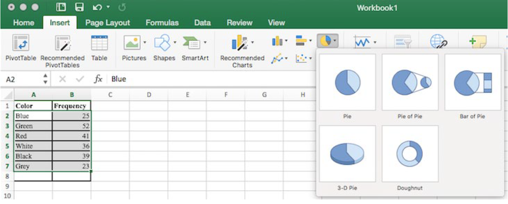
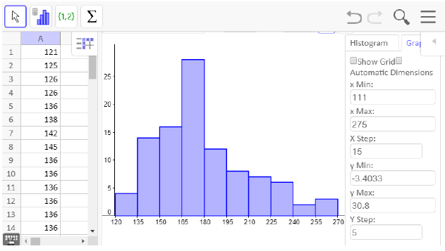
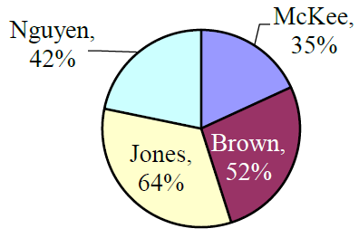
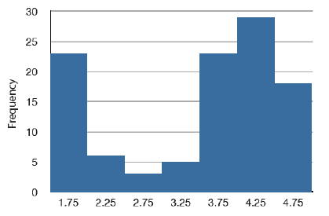

Define and identify categorical and quantitative data
Read and construct frequency tables and relative frequency tables
Make bar charts and pie charts for categorical variables by hand and/or using technology
Identify elements of misleading graphs: 3-dimensional graphs, perceptual distortion, misleading scales, stacked bar graphs
Make histograms for quantitative variables by hand and/or using technology
Identify the number of modes in a distribution and whether it is symmetric, skewed to the left,or skewed to the right
Once we have collected data from an observational study or an experiment, we need to summarize and present it in a way that will be meaningful to our audience. The raw data is not very useful by itself. In this section we will begin with graphical presentations of data and in the rest of the chapter we will learn about numerical summaries of data.
Subsection4.2.1Types of Data
There are two types of data, categorical data and quantitative data. The word data is plural because it represents many pieces of information.
Categorical (qualitative) data are pieces of information that allow us to classify the subjects into various categories.
Example4.2.1.
We might conduct a survey to determine the name of the favorite movie that people saw in a movie theater.When we conduct such a survey, the responses would look like: Finding Nemo, Black Panther, Titanic, etc.
We can count the number of people who give each answer, but the answers themselves do not have any numerical values: we cannot perform computations with an answer like Black Panther because it is categorical data.
Quantitative data are responses that are numerical in nature and with which we can perform meaningful calculations.
Example4.2.2.
A survey could ask the number of movies you have seen in a movie theater in the past 12 months (0, 1, 2, 3, 4, ...). This would be quantitative data.
Other examples of quantitative data would be the running time of the movie you saw most recently (104 minutes, 137 minutes, 110 minutes, etc.) or the amount of money you paid for a movie ticket the last time you went to a movie theater ($5.50, $9.75, $10.50, etc.).
We cannot assume that all numbers are quantitative data, and sometimes it is not so clear-cut. Here are some examples to illustrate this.
Example4.2.3.
Suppose we gather respondents ZIP codes in a survey to track their geographical location. ZIP codes are numbers, but we cant do any meaningful calculations with them (it doesnt make sense to say that 98036 is "twice" 49018 thats like saying that Lynnwood, WA is "twice" Battle Creek, MI, which doesnt make sense at all), so ZIP codes are really categorical data.
A survey about the movie you most recently saw includes the question, "How would you rate the movie?" with these possible answers:
It was awful.
It was just okay.
I liked it.
It was great.
Best movie ever!
Again, there are numbers associated with the responses, but these are really categories. A movie that rates a 4 is not necessarily twice as good as a movie that rates a 2, whatever that means; However, we often see that a movie got an average of 3.7 stars, which is an average of categorical ratings and it can give us important information.
Overall, it is important to look at the purpose of the study for any variables that could be classified as either categorical or quantitative. Another consideration is what you plan to do with the data. Next, we will talk about how to display each type of data.
Subsection4.2.2Presenting Categorical Data
Since we cant do calculations with categorical data, we begin by summarizing the data in a frequency table or a relative frequency table.
Subsection4.2.3Frequency Tables
A frequency table has one column for the categories, and another for the frequency, or number of times that category occurred.
Example4.2.4.
An insurance company determines vehicle insurance premiums based on known risk factors. If a person is considered a higher risk, their premiums will be higher. One potential factor is the color of your car. The insurance company believes that people with some color cars are more likely to get in accidents. To research this, they examine police reports for recent total-loss collisions. The data is summarized in this table.
Car Color
Frequency of Total- Loss Collisions
Blue
25
Green
52
Red
41
White
36
Black
39
Grey
23
Total
216
Subsection4.2.4Relative Frequency Tables
Counts are usually not as easy to interpret as percentages, so we will add a column for the relative frequencies. A relative frequency is the percentage for the category, found by dividing each frequency by the total and converting to a percentage. Youll notice the percentages may not add up to exactly 100% due to rounding.
Example4.2.5.
Car Color
Frequency of Total- Loss Collisions
Relative Frequency of Total-Loss Collisions
Blue
25
\(25/216 = 0.116\) or 11.6%
Green
52
\(52/216 = 0.241\) or 24.1%
Red
41
\(41/216 = 0.190\) or 19.0%
White
36
\(36/216 = 0.167\) or 16.7%
Black
39
\(39/216 = 0.181\) or 18.1%
Grey
23
\(23/216 = 0.107\) or 10.7%
Total
216
\(216/216 = 1.0\) or 100%
It would be even more useful to have a visual to see what is going on, and this is where charts and graphs come in.For categorical data we can display our data using bar graphs and pie charts.
Subsection4.2.5Bar graphs
A bar graph is a graph that displays a bar for each category with the height of the bar indicating the frequency of that category. To construct a bar graph with vertical bars, we label the horizontal axis with the categories. The vertical axis will have a scale for the frequency or relative frequency.
The highest frequency in our car data is 52 collisions, so we will set our vertical axis to go from 0 to 55, with a scale of 5 units. To draw bar graphs by hand graph paper is useful, or you can use technology.It is also very helpful to label each bar with the frequency or relative frequency.
Subsection4.2.6Pie Charts
A natural way to visualize relative frequencies is with a pie chart. A pie chart is a circle with wedges cut of varying sizes like slices of pizza or pie.The size of each wedge corresponds to the relative frequency of the category. The slices add up to 100%, just like relative frequencies. Pie charts can often benefit from including frequencies or relative frequencies in the pie slices.
Pie charts look nice but are harder to draw by hand than bar charts since to draw them accurately we would need to compute the angle each wedge cuts out of the circle, then measure the angle with a protractor. A spreadsheet is much better suited to drawing pie charts.
Subsection4.2.7Using a Spreadsheet to Make Bar Charts and Pie Charts
To make a graph using a spreadsheet, place the data from the frequency table into the cells. Then select the data, go to the Insert tab, and choose the bar graph or pie chart that you would like. For this example, we will choose a pie graph.

After the spreadsheet has created your pie graph you can choose which design you prefer by clicking on the Chart Design tab. Since these pie pieces represent car colors, we matched the color of each wedge to the color of the car in our pie chart above.
To give your graph a meaningful title, click on Chart Title. There are many other settings that you can experiment with.
Subsection4.2.8Misleading Graphs
Graphs can be misleading intentionally or unintentionally. Its better to keep them simple, clear and well-labeled. People sometimes add features to graphs that dont help convey their information.
Example4.2.6.
A 3-dimensional bar chart like the one shown is usually not as effective as a 2-dimensional graph. The extra dimension does not add any useful information.
Here is another way that fanciness can sometimes lead to trouble. Instead of plain bars, it is tempting to substitute images. This type of graph is called a pictogram.
Subsection4.2.9Perceptual Distortion
A pictogram is a statistical graphic in which the size of the picture is intended to represent the frequency or size of the values being represented. We need to be careful with these, because our brains perceive the relationship between the areas, not the heights.
Example4.2.7.
A labor union might produce this graph to show the difference between the average manager salary and the average worker salary.
The average manager salary is twice as high as the average worker salary as in a bar graph, but the image is also twice as wide. That makes it look like the manager salary is 4 times as large as the worker salary. The area needs to accurately portray the relationship, otherwise we will have a perceptual distortion.
Subsection4.2.10Misleading Scale
Another type of distortion in bar charts results from setting the baseline to a value other than zero. The baseline is the bottom of the vertical axis, representing the least number of cases that could have occurred in a category. Normally, this number should be zero.
Example4.2.8.
Compare the two graphs below showing support for same-sex marriage rights from a poll taken in December, 20081
. At a glance, the two graphs suggest very different stories. The second graph makes it look like more than three times as many people oppose marriage rights as support them. But when we look at the scale we can see that the difference is about 12%. By not starting at zero the difference looks enlarged.
Subsection4.2.11Stacked Bar Graphs
Another type of graph that can be hard to read and sometimes misleading is a stacked bar graph. In a stacked bar graph, the values we are comparing are stacked on top of each other vertically.
Example4.2.9.
The table lists college expenses for two different students and we want to compare them. A stacked bar graph shows the expenses stacked vertically, but we are interested in the differences, not the totals.
Expense
Student 1
Student 2
Rent
$500
$650
Food
$125
$125
Tuition
$1750
$1450
Books
$325
$275
Misc
$100
$175
It is much easier to interpret the differences in a side-by-side bar chart.
Subsection4.2.12Presenting Quantitative Data
With categorical data, the horizontal axis is the category, but with quantitative, or numerical, data we have numbers. If we have repeated values we can also make a frequency table.
Example4.2.10.
A teacher records scores on a 20-point quiz for the 30 students in their class. The scores in points are:
19
20
18
18
17
18
19
17
20
18
20
16
20
15
17
12
18
19
18
19
17
20
18
16
15
18
20
5
0
0
Here is a frequency table with the scores grouped and put in order.
Quiz Score
Frequency of Students
0
2
5
1
12
1
15
2
16
2
17
4
18
8
19
4
20
6
Using this table, it would be possible to create a standard bar chart from this summary, like we did for categorical data. However, since the scores are numerical values, this chart wouldnt make sense; the first and second bars would be five values apart, while the later bars would only be one value apart. Instead, we will treat the horizontal axis as a number line. This type of graph is called a histogram.
Subsection4.2.13Histograms
A histogram is like a bar graph, but the horizontal axis is a number line. Unlike a bar graph, there are no spaces between the bars. Here are two histograms for the data given above. Notice that in the one on the left, the two scores of 15 are to the right of 15, or between 15 and 16. The horizontal scales on histograms can be confusing for this reason. Some people choose to have bars start at values to avoid this ambiguity, as in the one on the right.
If we have a large number of different data values, a frequency table listing every possible value would be way too long. There would be too many bars on the histogram to reveal any patterns. For this reason, it is common with quantitative data to group data into class intervals.
Subsection4.2.14Class Intervals
Class intervals are groupings of the data. In general, we define class intervals so that:
Each interval is equal in size. For example, if the first class contains values from 120 up to but not including 135, the second class should include values from 135 up to but not including 150.
We typically have somewhere between 5 and 20 classes, depending on the number of data values were working with.
In the next example, well make a histogram using class intervals.
Example4.2.11.
Suppose we have collected weights from 100 subjects who identify as male, as part of a nutrition study. For our weight data, we have values ranging from a low of 121 pounds to a high of 263 pounds, giving a total span of \(263-121 = 142\text{.}\)
There are many ways to draw a histogram and we will explain one way as an example. We will create 10 classes by doing the following calculation: Take the range of 142 and divide it by 10 to find the class width.
\(142/10 = 14.2\)
Then we round up the class width so that the largest data value will be in one of the classes. So we round up to a class width of 15. Since the minimum data value is 121, we will choose 120 to start with since it is a multiple of 15 that is less than 121.
Interval
Frequency
120-134.99
4
135-149.99
14
150-164.99
16
165-179.99
28
180-194.99
12
195-209.99
8
210-224.99
7
225-239.99
6
240-254.99
2
255-269.99
3
When using class intervals, it is much easier to use technology that was specifically designed to make histograms. GeoGebra is one program that lets you adjust the class widths to see which graph best displays the data.
Subsection4.2.15Histograms Using Technology
We will be using GeoGebra throughout this chapter to make graphs and calculate summary statistics. There is an online version and one you can download at geogebra.org. To access the online version, select "GeoGebra Classic from the GeoGebra home page. To download it, select "App Downloads" from the home page. The instructions are similar for both.
The first thing we need to do is enter the data in GeoGebras spreadsheet. You can access the spreadsheet from Main Menu \(\rightarrow\)View \(\rightarrow\)Spreadsheet. Next, enter your data and select that column. Then click on the histogram icon in the menu bar on the left side and select One Variable Analysis.
A new window will pop up showing a visual of the data. There is a drop-down menu for the type of graph, but histogram is the default. Notice that the bars are not lined up with the tick-marks at the bottom, so we want to edit this histogram. The slider bar at the top will let you see different class widths, but we want to choose our class widths manually.
If you close the menu at the top right by clicking on the left pointing triangle, you will see a settings wheel. Click on the wheel and check the box for set classes manually. To match our previous histogram, we will start at 120 pounds and set a class width of 15 pounds.
Now the bars of the histogram match our previous graph, but we need to edit the axis labels to match. Click on the graph tab on the right side and uncheck the box for automatic dimensions. We set the x min, x max, x step, y min, y max and y step as shown.

To put the graph in an assignment or a book such as this one, select the export icon and choose Export as Picture. The downloaded version also has a Copy to Clipboard option. Then insert the graph into any document and add axis labels.
Here is our finished histogram:
Subsection4.2.16The Shape of a Distribution
Once we have our histogram, we can use it to determine the shape of the data or distribution. When describing distributions, we are going to look at four characteristics: shape, center, spread and outliers. Center and spread (variation) will be covered in the next two sections.
Subsection4.2.17Modality
The modality of a distribution indicates the number of peaks or hills in its histogram.
It is unimodal if it has one peak.
It is bimodal if it has two peaks.
It is multimodal if it has multiple peaks.
Example4.2.12.
The first graph is unimodal, the second is bimodal and the third is multimodal.
A bimodal distribution can result when two different populations have been grouped together and they are overlapping. It would be better to separate them into two separate graphs. For example, the grams of sugar per serving in sugar and non-sugar cereals.
Subsection4.2.18Symmetry
A distribution is symmetric if the left side of the graph mirrors the right side.
Example4.2.13.
The graph on the left is symmetric and unimodal while the graph on the right is roughly symmetric and bimodal.
Subsection4.2.19Skewness
If a distribution is not symmetric then we say it is skewed. A graph can be skewed to the left or skewed to the right. We say it is skewed in the direction of the longer tail.
Subsection4.2.20Skewed to the Left
A left skewed graph is also called a negatively skewed graph. The longer tail will be on the left or negative side.
Subsection4.2.21Skewed to the Right
A right skewed graph is also called a positively skewed graph. The longer tail will be on the right or positive side.
Subsection4.2.22The Normal Distribution
The normal distribution has a very specific shape. It is unimodal and symmetric with a bell-shaped graph.
Subsection4.2.23Outlier
Outliers are data values that are unusually far away from the rest of the data. There is often a gap between the outlier and the rest of the graph. This visual determination of outliers is often subjective and depends on the situation.
Example4.2.14.
In the graph to the right we have a unimodal distribution that is skewed to the right. There appears to be an outlier near 20.
Exercises4.2.24Exercises
1.
True or False: The bars of a histogram should always touch.
2.
True or False: The bars of a bar graph should always touch.
3.
Is the data described categorial or quantitative?
In a study, you ask the subjects their age in years.
In a study, you ask the subjects their gender.
In a study, you ask the subjects their ethnicity.
The daily high temperature of a city over several weeks.
A persons annual income.
4.
Is the data described categorical or quantitative?
In a study you ask the subjects how many siblings they have.
In a study you ask the subjects what their favorite movie genre is.
In a study to measure the subjects blood pressure.
The daily rainfall in a city over several weeks.
In a study you ask the subjects the amount they spend on housing each month
5.
What types of graphs are used for categorical data?
6.
What types of graphs are used for quantitative data?
7.
A group of adults were asked how many children they have in their family. The bar graph to the right shows the number of adults who indicated each number of children.
How many adults had 3 children?
How many adults where questioned?
What percentage of the adults questioned had 0 children?
8.
Jasmine was interested in how many days it would take a DVD order from Netflix to arrive at her door. The graph shows the data she collected.
How many movies took 2 days to arrive?
How many movies did she order in total?
What percentage of the movies arrived in one day?
9.
This relative frequency bar graph shows the percentage of students who received each letter grade on their last English paper. The class contains 20 students. What number of students earned an A on their paper?
10.
This relative frequency bar graph shows the percentage of each drink type served over the weekend at a local coffee shop. There were 120 drinks served in total. How many served drinks were lattes?
11.
Corey categorized his spending for this month into four categories: Rent, Food, Fun, and Other. The percentages he spent in each category are pictured here. If he spent a total of $2,600 this month, how much did he spend on rent?
12.
Habiba categorized the amount of time spent each week into 5 categories: Work, Travel, Housework, Leisure, and Sleep. If there are a total of 168 hours each week, how many hours does Habiba spend travelling each week?
, 1012 adults were asked whether they personally worried about a variety of environmental concerns. The number of people who indicated that they worried a great deal about some selected concerns is listed below.
Is this categorical or quantitative data?
Make a bar chart for these data.
Why cant we make a pie chart for these data?
Environmenal Issue
Frequency
Pollution of drinking water
597
Contamination of soil and water by toxic waste
526
Air pollution
455
Global warming
354
14.
In a survey, 2056 adults were asked about their views on immigration. The percent of people who responded that immigrants to the United States are making each of the following situations in the country better are listed below.
Is this categorical or quantitative data?
Make a relative frequency bar chart for these data.
Can we make a pie chart for these data?
Situation
Relative Frequency (%)
Food, music and the arts
57
The economy in general
43
Social and moral values
31
Job opportunities for you and your family
19
Taxes
20
Crime
7
15.
The following table is from a sample of five hundred homes in Oregon that were asked the primary source of heating in their home.
How many of the households heat their home with firewood?
What percent of households heat their home with natural gas?
Type of Heat
Relative Frequency (%)
Electricity
33
Heating Oil
4
Natural Gas
50
Firewood
8
Other
5
16.
The following table is from a sample of 50 undergraduate students at Portland State University.
What percent of the sampled students are below senior class?
How many of the sampled students are freshmen?
Class
Relative Frequency (%)
Freshman
18
Sophmore
13
Junior
23
Senior
46
17.
A group of adults were asked how many cars they had in their household.
Is this categorical or quantitative data?
Make a relative frequency table for the data.
Make a bar chart for the data.
Make a pie chart for the data.
1
4
2
2
1
2
3
3
1
4
2
2
1
2
1
3
2
2
1
2
1
1
1
2
18.
The table below shows scores on a math test.
Is this categorical or quantitative data?
Make a relative frequency table for the data using a class width of 10.
Construct a histogram of the data.
82
55
51
97
73
79
100
60
71
85
78
59
90
100
88
72
46
82
89
70
100
68
61
52
19.
This graph shows the number of adults and kids who prefer each type of soda. There were 130 adults and kids surveyed. Discuss some ways in which the graph could be improved.
20.
A poll was taken asking people if they agreed with the positions of the 4 candidates for a county office. Does this pie chart present a good representation of these data? Explain.

21.
Why is this a misleading or poor graph?
22.
Why is this a misleading or poor graph?
23.
Match each description to one of the graphs.
Normal distribution
Positive or right skewed
Negative or left skewed
Bimodal
Figure4.2.15.The frequency of times between eruptions of the Old Faithful geyser.
Figure4.2.16.Scores on a 20-point statistics quiz.
Figure4.2.17.The distribution of scores on a psychology test.
Figure4.2.18.The number of heads in 24 sets of 100 coin flips.
24.
Write a sentence or two to describe each distribution in terms of modality, symmetry, skewness and outliers.
25.
Studies are often done by pharmaceutical companies to determine the effectiveness of a treatment. Suppose that a new cancer drug is currently under study. Of interest is the average length of time in months patients live once starting the treatment. Two researchers each follow a different set of 40 cancer patients throughout their treatment. The following data (in months) are collected.
Create a histogram for each dataset, using the same class intervals and scales so you can compare them.